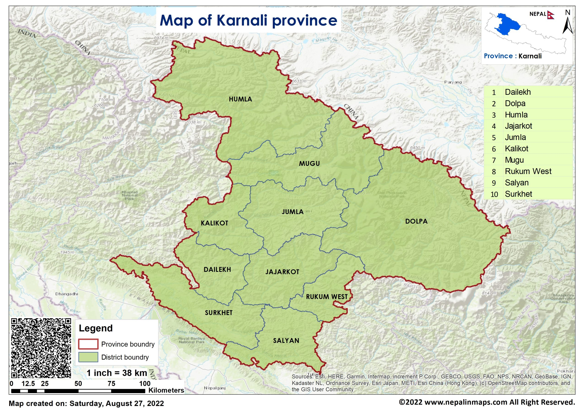

Map

Karnali Province (Nepali: कर्णाली प्रदेश, romanized: Karṇālī pradēśa) is one of the seven federal provinces of Nepal formed by the new constitution, which was adopted on 20 September 2015.The total area of the province is 27,984 square kilometres (10,805 mi2), making it the largest province in Nepal with 18.97% of the country's area. According to the 2011 Nepal census, the population of the province was 1,570,418, making it the least populous province in Nepal. The province borders the Tibet Autonomous Region of China to the north, Gandaki Province to the east, Sudurpashchim Province to the west, and Lumbini Province to the south. Birendranagar with a population of 154,886 is both the province's capital and largest city.
Karnali is the largest province of Nepal with an area of 27,984 km2 (10,805 sq mi). The province is surrounded by Gandaki Province in east, Lumbini Province in south-east and south, Sudurpashchim Province in the west and Tibet Autonomous Region of China in north.